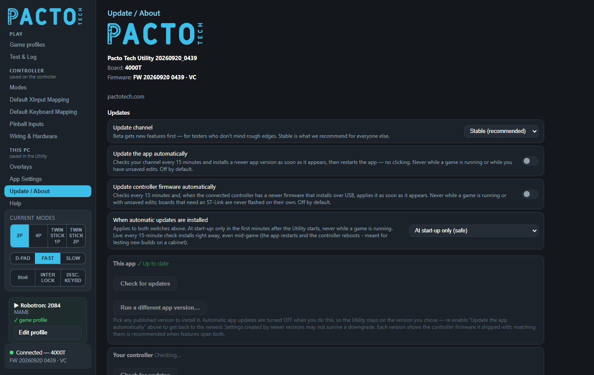
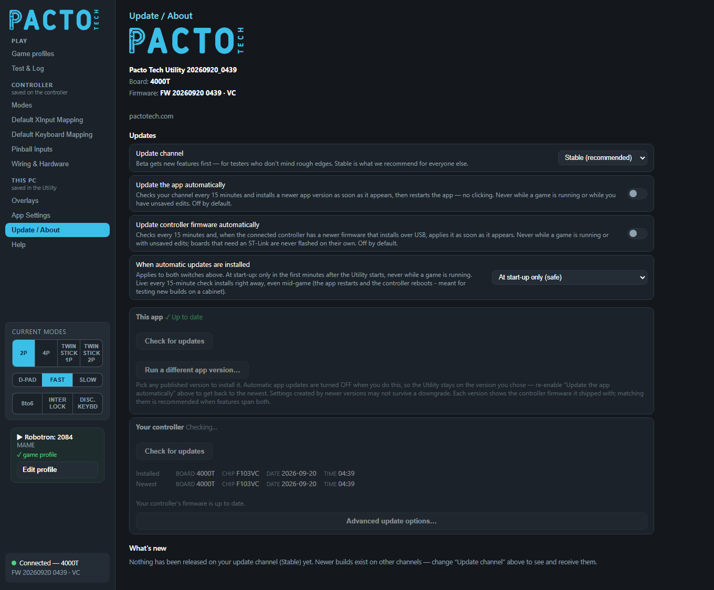

Choose how updates reach you, keep the Utility and your controller's firmware up to date, go back to an older version if you need to, recover a board that stopped working, and see what changed in each release.

Update / About is in the This PC group of the sidebar. The update settings are saved on your PC as soon as you change them.
The top of the page shows:
| Line | Meaning |
|---|---|
| Pacto Tech Utility | The version of the app you are running, for example 20260920_0439 (release date and time). |
| Board | The model of the connected controller, for example 4000T. |
| Firmware | The firmware version on the controller, followed by its chip code, for example
FW 20260920 0439 · VC. The chip code is VB, VC or ZE, short for
the F103VB, F103VC or F103ZE chip. |
The same board and firmware details are shown in the connection box at the bottom of the sidebar.
These settings, right under the version information, control how the Utility and your controller's firmware are kept up to date.
| Setting | What it does |
|---|---|
| Update channel | Stable (recommended), Beta or Early Testing. Beta gets new features first. Early Testing gets the newest work before that. The channel applies to both app and firmware updates. See Update channels. |
| Update the app automatically | Checks your channel every 15 minutes and installs a newer app version on its own, then restarts the app. It never installs while you have unsaved changes. Off by default. |
| Update controller firmware automatically | Installs newer firmware on the connected controller when it can be done over the USB cable. A board that updates with an ST-Link is never flashed on its own. It never installs while you have unsaved changes. Off by default. |
| When automatic updates are installed | Applies to both switches above. At start-up only (safe): updates install only in the first minutes after the Utility starts, and never while a game is running. An update found later waits for the next start. Live - install as soon as found, even mid-game: each check installs at once. The app restarts and the controller reboots, even in the middle of a game. This is meant for testing new builds on a cabinet. |
When neither automatic switch is on, the Utility still checks every 6 hours. It only shows the update notice in the sidebar and installs nothing. It also checks about 10 seconds after it starts, and again each time you open this page (at most once every 5 minutes). When something is waiting, the box that needs your attention is highlighted, and a notice such as Updates available — click here appears in the sidebar.
The status next to This app shows Checking…, ✓ Up to date, Update available — install below, or Update check failed with the reason.
| Control | What it does |
|---|---|
| Check for updates | Checks your update channel right now. It always does a fresh check. |
| Download & install | Appears with the new version number and its notes when an update is available. A bar shows the download. When it is done, the Utility restarts on the new version. |
| Run a different app version… | Lists every published app version, newest first. Each entry shows its channel, date and notes, and the firmware it shipped with (firmware of the time). Your current version is marked installed. Click Install this, then click again on Confirm: install & restart within a few seconds. The Utility checks the installer's signature, closes and runs the installer. Older versions from before archiving began show not archived and can't be installed. |

This box handles the firmware on the connected board.
| Message | What to do |
|---|---|
| Plug your controller in with its USB cable to check for firmware updates. | No board is connected. Connect it by USB. |
| Your controller's firmware is up to date. | Nothing to do. |
| A firmware update is ready (…). It installs over the USB cable — just click the button. | Click Update over USB. A bar and a short status (such as downloading, writing firmware, verifying, restarting) show progress. When it is finished you'll see Done — controller restarting, and the board comes back on the new firmware. |
| A firmware update is ready (…). followed by a reason, with ST-Link instructions | This board updates with an ST-Link. See Boards that update with an ST-Link below. |
| The controller is in update mode (…). | The board is waiting for firmware. See Repairing a board in update mode. |
| Firmware check failed with a reason | Usually a network problem. Try Check for updates again later. |
Some boards can't take firmware over the USB cable. The message tells you why:
In both cases the box shows the steps and an Update firmware button:
If the Utility can't reach the chip, it keeps trying and asks you to check the power and the SWDIO / SWCLK / GND wires, and to power-cycle the board. If no ST-Link is found, check the USB connection. If Windows doesn't recognise the ST-Link, install ST's ST-Link driver.
Boards with a USB update mode go into it by themselves when their firmware is missing or incomplete, or when it failed to start three times in a row. When that happens, the box shows a Board list and a Repair firmware button. Check that the board model is right (the Utility fills it in when it knows the board), then click Repair firmware. The current firmware for your channel is installed over USB.
Click Advanced update options… to open these tools. They are mainly for fixing a wrong firmware version or recovering a board that stopped responding. Normally the board and chip are detected for you, so only change them if you know they are wrong.
| Tool | What it does |
|---|---|
| Recover a board that stopped responding… | Use this when the board's firmware runs but the Utility can't talk to it. Pick the board model in the Board list, click the button, then turn the cabinet off and on. The Utility waits up to 45 seconds to catch the board as it starts up, then installs the current firmware over USB. This works on boards that have a USB update mode. |
| Board, Chip and Flash with ST-Link | Flashes the current firmware with an ST-Link, using the board model and chip you choose. Leave Chip on Auto (read from chip) unless you have a reason not to. The other choices are F103VC (256 KB), F103VB (128 KB) and F103ZE (512 KB). |
| Flash a specific version… | Lists every published firmware version for your board, from all channels, newest first. Each entry shows its channel, date and notes, and the app it shipped with (app of the time). Your current version is marked installed. Click Flash this to install that version: over USB on boards that support it, or with an ST-Link otherwise. |
You choose the channel with Update channel under Updates at the top of this page. It applies to both app and firmware updates, and you can change it at any time without reinstalling.
| Channel | What you get |
|---|---|
| Stable (recommended) | The releases we recommend for everyone. |
| Beta | New features before Stable, for testers who don't mind rough edges. |
| Early Testing | The newest work, first. |
At the bottom of the page is a combined list of app and firmware releases, newest first (up to 25). Each entry shows the version, its channel, whether it is an app release, a firmware release or both, the boards it covers where relevant, the date, and the notes. The list includes a copy that ships with the Utility, so it works offline. When you are online, newer entries are added.
You see releases for your own channel. Stable shows Stable releases. Beta shows Stable and Beta. Early Testing shows everything. If nothing has been released on your channel yet, the list says so and suggests changing Update channel above.
The full history is also online in the release notes.